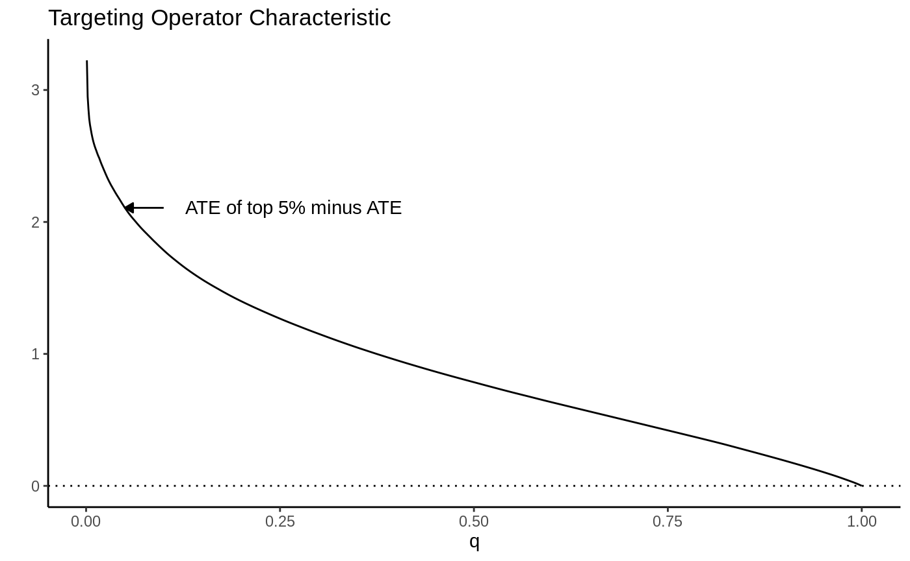
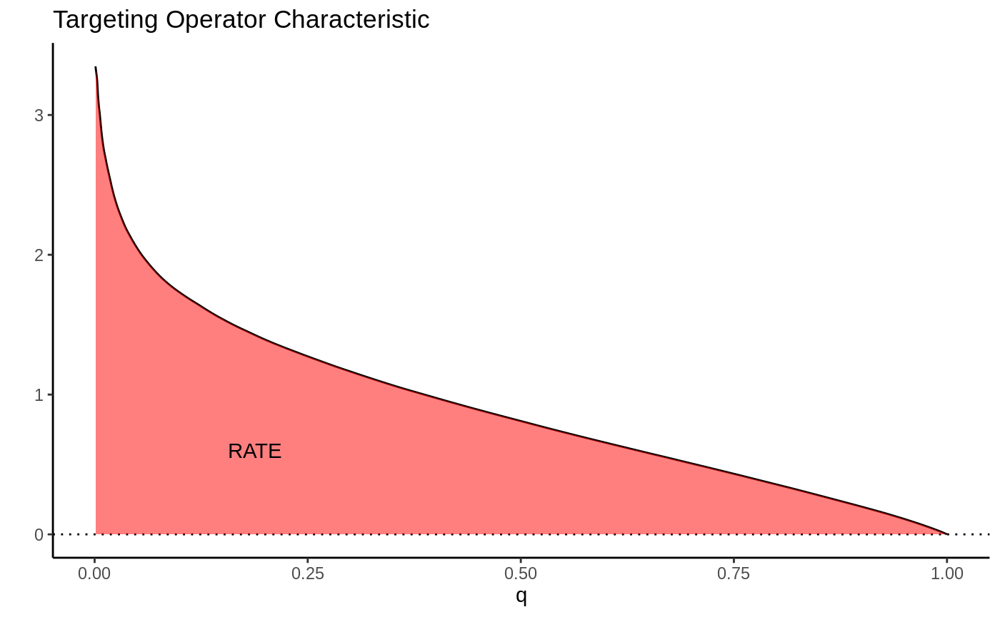
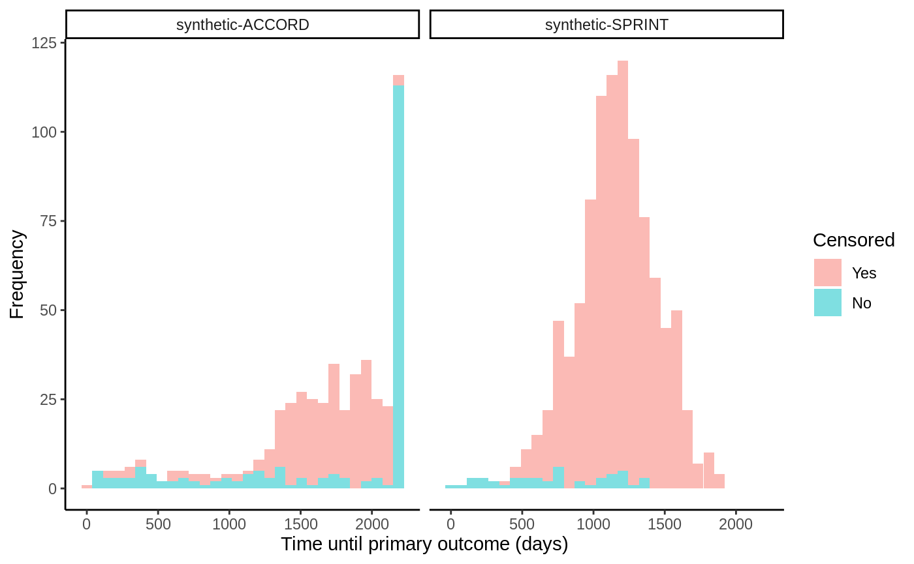
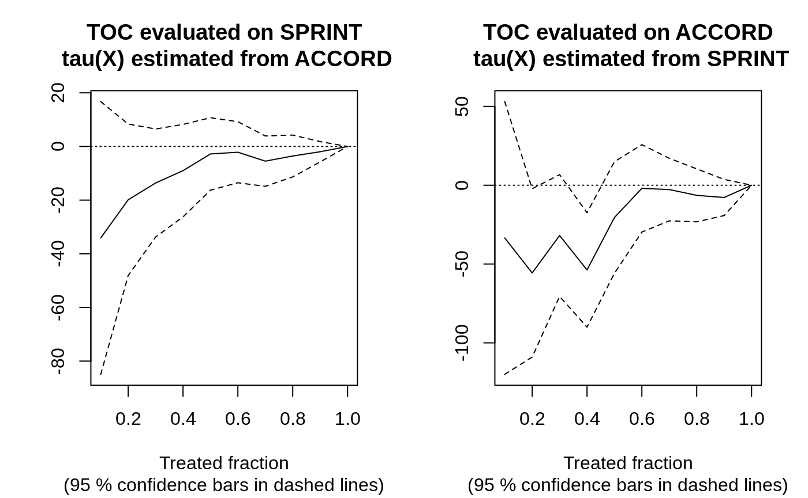

This vignette gives a brief introduction to how the Rank-Weighted Average Treatment Effect (RATE) available in the function rank_average_treatment_effect can be used to evaluate how good treatment prioritization rules (such as conditional average treatment effect estimates) are at distinguishing subpopulations with different treatment effects, or whether there is any notable heterogeneity present. The second part of the vignette gives a worked example from a medical setting using (synthetic) data from the SPRINT and ACCORD hypertension drug trials. For complete details we refer to the RATE paper.
We are in the familiar experimental setting (or unconfounded observational study) and are interested in the problem of determining which individuals to assign a binary treatment \(W=\{0, 1\}\) and the associated value of this treatment allocation strategy. Given some subject characteristics \(X_i\) we have access to a subject-specific treatment prioritization rule \(S(X_i)\) which assigns scores to subjects. This prioritization rule should give a high score to units which we believe to have a large benefit of treatment and a low score to units with a low benefit of treatment. By benefit of treatment, we mean the difference in outcomes \(Y\) from receiving the treatment given some subject characteristics \(X_i\), as given by the conditional average treatment effect (CATE)
\[\tau(X_i) = E[Y_i(1) - Y_i(0) \,|\, X_i = x],\] where \(Y(1)\) and \(Y(0)\) are potential outcomes corresponding to the two treatment states.
You might ask: why the general focus on an arbitrary rule \(S(X_i)\) when you define benefit as measured by \(\tau(X_i)\)? Isn’t it obvious that the estimated CATEs would serve the best purpose for treatment targeting? The answer is that this general problem formulation is quite convenient, as in some settings we may lack sufficient data to power an accurate CATE estimator and have to rely on other approaches to target treatment. Examples of other approaches are heuristics derived by domain experts or simpler models predicting risk scores (where risk is defined as \(P[Y = 1 | X_i = x]\) and \(Y \in \{0, 1\}\) with \(Y=1\) being an adverse outcome), which is quite common in clinical applications. Consequently, in finite samples we may sometimes do better by relying on simpler rules which are correlated with the CATEs, than on noisy and complicated CATE estimates (remember: CATE estimation is a hard statistical task, and by focusing on a general rule we may circumvent some of the problems of obtaining accurate non-parametric point estimates by instead asking for estimates that rank units according to treatment benefit). Also, even if you have an accurate CATE estimator, there may be many to choose from (neural nets/random forests/various metalearners/etc). The question is: given a set of treatment prioritization rules \(S(X_i)\), which one (if any) should we use?
The tool we propose to employ in this situation is a RATE metric. It takes as input a prioritization rule \(S(X_i)\) which may be based on estimated CATEs, risk scores, etc, and outputs a scalar metric that can be used to assess how well it targets treatment (it measures the value of a prioritization rule while being agnostic to exactly how it was derived). A RATE metric has two components: the “TOC” and the area under the TOC, which we explain in the following section.
As outlined in the previous section, we are interested in the presence of heterogeneity and how much benefit there is to prioritizing treatment based on this heterogeneity using a targeting rule \(S(X_i)\). By “benefit” we mean the expected increase in outcomes from giving treatment to a fraction of the population with the largest scores \(S(X_i)\) as opposed to giving treatment to a randomly selected fraction of the same size.
As a first step towards a suitable metric that helps us asses this, some visual aid would be nice. One reasonable thing to do would be to chop the population up into groups defined by \(S(X_i)\), then compare the ATE in these groups to the overall ATE from treating everyone, then plot this over all groups. This is what the Targeting Operator Characteristic (TOC) does, where each group is the top q-th fraction of individuals with the largest prioritization score \(S(X_i)\).
Let \(F\) be the distribution function of \(S(X_i)\) and \(q \in (0, 1]\) the fraction of samples treated, the TOC at \(q\) is then defined by
\[\begin{equation*} \begin{split} &\textrm{TOC}(q) = E[Y_i(1) - Y_i(0) \,|\, S(X_i) \geq F^{-1}_{S(X_i)}(1 - q)]\\ & \ \ \ \ \ \ \ \ \ \ \ \ \ \ \ \ - E[Y_i(1) - Y_i(0)], \end{split} \end{equation*}\]
where \(F_{S(X_i)}\) is the distribution function of \(S(X_i)\). The TOC curve is motivated by the Receiver Operating Characteristic (ROC), a widely used metric for assessing the performance of a classification rule.
As a toy example, suppose we let \(\tau(X_i) = X_1\) where \(X_1 \sim N(0, 1)\). Then the TOC curve when prioritizing using \(S(X_i) = \tau(X_i)\) looks like:

Note how high the TOC is for the first few units treated. This is intuitive since our toy CATEs are normally distributed with mean zero; if we identify and treat only the top 5% of units with treatment effects greater than \(z_{0.95}\), the benefit over treating everyone (0) is large. As we move further along, mixing in more people with lower treatment effect, we get closer to the ATE, until at \(q=1\) we equal it.
This picture suggests a quite natural way to summarize the TOC curve in terms of the ability of \(S(X_i)\) to rank individuals by treatment benefit: sum up the area under the curve. This is exactly how the RATE is defined, it is the Area Under the TOC (“AUTOC”)
\[\textrm{RATE} = \int_0^1 \textrm{TOC}(q) dq .\] If there is barely any heterogeneity in \(\tau(X_i)\) this area will be vanishingly small and in the special case where \(\tau(X_i)\) is constant, it’s zero. Thinking one step ahead, if our estimated rule \(S(X_i)\) does well in identifying the individuals with very different benefits of treatment, we would expect this metric to be positive. Conversely, if it does badly, or there are barely any benefits to stratifying treatment, we would expect it to be negative or close to zero, respectively.

There are different ways this area can be summed up, which gives rise to different RATE metrics. We refer to the integral above as the “AUTOC”. This places more weight on areas under the curve where the expected treatment benefit is largest. When non-zero treatment effects are concentrated among a small subset of the population this weighting is powerful for testing against a sharp null (AUTOC = 0).
Another way to sum this area would be to weight each point on the curve by \(q\): \(\int_0^1 q \textrm{TOC}(q) dq\). We refer to this metric as the “QINI” (Radcliffe, 2007). This weighting implies placing as much weight on units with low treatment effects as on units with high treatment effects. When non-zero treatment effects are more diffuse across the entire population, this weighting tends to give greater power when testing against a null effect.
Another thing to note is that the “high-vs-low” out-of-bag CATE quantile construction used in Athey and Wager (2019) can also be seen as a kind of RATE, where in place of Qini’s identity weighting it would have point mass at q = a given quantile.
The overview in the previous section gave a stylized introduction where we imagined we knew \(\tau(X_i)\). In practice these have to be estimated and the appropriate feasible definition (using \(S(X_i) = \hat \tau(X_i)\) as an example) is: the TOC curve ranks all observations on a test set \(X^{test}\) according to a CATE function \(\hat \tau^{train}(\cdot)\) estimated on a training set, and compares the ATE for the top q-th fraction of units prioritized by \(\hat \tau^{train}(X^{test})\) to the overall ATE:
\[\begin{equation*} \begin{split} &\textrm{TOC}(q) = E[Y^{test}_i(1) - Y^{test}_i(0) \,|\, \hat \tau^{train}(X^{test}_i) \geq \hat F^{-1}(1 - q)]\\ & \ \ \ \ \ \ \ \ \ \ \ \ \ \ \ \ - E[Y^{test}_i(1) - Y^{test}_i(0)], \end{split} \end{equation*}\]
where \(\hat F\) is the empirical distribution function of \(\hat \tau^{train}(X^{test})\). The rank_average_treatment_effect function delivers a AIPW-style1 doubly robust estimator of the TOC and RATE using a forest trained on a separate evaluation set. For details on the derivation of the doubly robust estimator and the associated central limit theorem, see Yadlowsky et al. (2021).
To illustrate RATE we consider an example application from a medical setting. Two large randomized trials ACCORD (ACCORD Study Group, 2010) and SPRINT (SPRINT Research Group, 2015) conducted on similar populations and designed to measure the effectiveness of a hypertension treatment reach different conclusions. SPRINT found the treatment was effective, ACCORD found that the treatment was not effective. Various explanations for this finding have been proposed, we’ll focus on one in particular here: the hypothesis that the difference is due to heterogeneity in treatment effects (see Yadlowsky et al., 2021 for references).
This hypothesis has a testable implication implied by the previous section: if there is significant heterogeneity present and we are able to effectively estimate these with a powerful CATE estimator, then an estimated RATE on ACCORD and SPRINT should be positive and significant. In particular, our setup implies the following recipe:
Estimate CATE functions \(\hat \tau^{ACCORD}(\cdot)\) and \(\hat \tau^{SPRINT}(\cdot)\) on ACCORD and SPRINT data.
Use \(\hat \tau^{ACCORD}(X^{SPRINT})\) to evaluate RATE on SPRINT, and vice versa: use \(\hat \tau^{SPRINT}(X^{ACCORD})\) to evaluate RATE on ACCORD.
If both populations exhibit similar HTEs, then a powerful CATE estimator should yield a positive and significant RATE estimate.
For the purpose of this vignette example we’ll not analyse the original SPRINT/ACCORD data, but rather a smaller simulated example, stored in the GRF repository. For details on the simulator see the RATE repository.
The outcome data in this trial is right-censored, so we cannot use any ordinary “out-of-the-box” CATE estimator to estimate treatment effects, rather, we need one that takes censoring into account. For this reason we use GRF’s causal_survival_forest (and refer to the documentation for details). Below is an illustration of the simulated trial data.
# Read in dummy data from https://github.com/grf-labs/grf/tree/master/r-package/grf/vignettes load("synthetic_SPRINT_ACCORD.RData") df <- data.frame(Y = c(Y.sprint, Y.accord), D = c(D.sprint, D.accord), data = c(rep("synthetic-SPRINT", length(Y.sprint)), rep("synthetic-ACCORD", length(Y.accord)))) df$Censored <- factor(df$D, labels = c("Yes", "No")) ggplot(df, aes(x = Y, fill = Censored)) + facet_wrap(data ~ .) + geom_histogram(alpha = 0.5, bins = 30) + xlab("Time until primary outcome (days)") + ylab("Frequency") + theme_classic()

The SPRINT trial was halted early due to a low number of events occurring and thus have a very high censoring rate. The target estimand we consider in this example is the difference in restricted mean survival time (RMST) conditional on covariates:
\[\tau(x) = E[T(1) \land h - T(0) \land h \, | X = x],\] where \(T\) is the (censored) survival time and we set \(h\) (horizon in the GRF package) to ~ 3 years, after which the SPRINT trial data nearly stops exhibiting events. Since the treatment was randomized we set the propensity scores W.hat\(=E[W_i \, | X_i = x]\) to the mean number of treated units.
horizon <- 3 * 365 csf.sprint <- causal_survival_forest(X.sprint, Y.sprint, W.sprint, D.sprint, W.hat = mean(W.sprint), target = "RMST", horizon = horizon) csf.accord <- causal_survival_forest(X.accord, Y.accord, W.accord, D.accord, W.hat = mean(W.accord), target = "RMST", horizon = horizon) tau.hat.sprint <- predict(csf.accord, X.sprint)$predictions tau.hat.accord <- predict(csf.sprint, X.accord)$predictions
Evaluating RATE on SPRINT and ACCORD, using estimated CATE functions from ACCORD and SPRINT then gives
rate.sprint <- rank_average_treatment_effect(csf.sprint, tau.hat.sprint, target = "AUTOC") rate.accord <- rank_average_treatment_effect(csf.accord, tau.hat.accord, target = "AUTOC") rate.sprint #> estimate std.err target #> -10.88788 6.904641 priorities | AUTOC rate.accord #> estimate std.err target #> -18.66819 11.67814 priorities | AUTOC
par(mfrow = c(1, 2)) plot(rate.sprint, xlab = "Treated fraction", main = "TOC evaluated on SPRINT\n tau(X) estimated from ACCORD") plot(rate.accord, xlab = "Treated fraction", main = "TOC evaluated on ACCORD\n tau(X) estimated from SPRINT")

In this semi-synthetic example both AUTOCs are insignificant at conventional levels, suggesting there is no evidence of significant HTEs in the two trials. Note: this can also be attributed to a) low power, as perhaps the sample size is not large enough to detect HTEs, b) that the HTE estimator does not detect them, or c) the heterogeneity in the treatment effects along observable predictor variables are negligible. For a broader analysis comparing different prioritization strategies on the SPRINT and ACCORD datasets, see Yadlowsky et al. (2021).
Development of the RATE functionality in GRF was supported in part by the award 5R01HL144555 from the National Institutes of Health.
ACCORD Study Group. Effects of Intensive Blood-Pressure Control in Type 2 Diabetes Mellitus. New England Journal of Medicine, 362(17):1575–1585, 2010.
Susan Athey and Stefan Wager. Estimating Treatment Effects with Causal Forests: An Application. Observational Studies, 5, 2019.
Radcliffe, Nicholas. Using control groups to target on predicted lift: Building and assessing uplift model. Direct Marketing Analytics Journal (14-21), 2007.
SPRINT Research Group. A Randomized Trial of Intensive Versus Standard Blood-Pressure Control. New England Journal of Medicine, 373(22):2103–2116, 2015.
Yadlowsky, Steve, Scott Fleming, Nigam Shah, Emma Brunskill, and Stefan Wager. Evaluating Treatment Prioritization Rules via Rank-Weighted Average Treatment Effects. arXiv preprint arXiv:2111.07966 (arxiv)
AIPW = Augmented Inverse-Propensity Weighting (Robins, Rotnitzky, and Zhao, 1994)↩